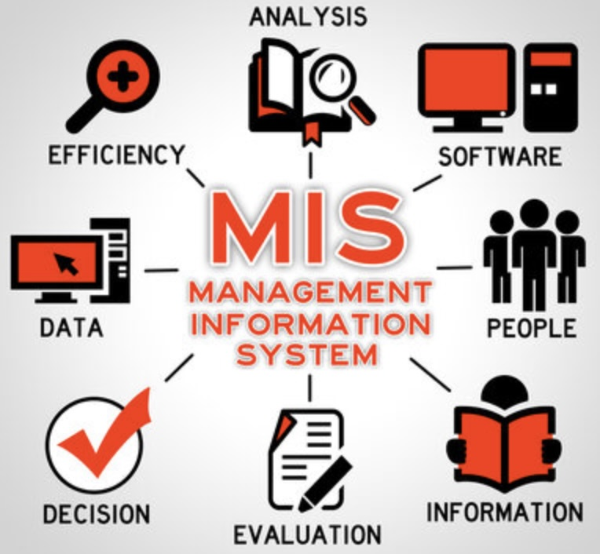

MIS & AI EthicsWebsite OverviewHailey Cuellar and Mallory WoodsOctober 21, 2026 Management Information Systems (MIS) is the backend of planning that helps managers make operational and strategic decisions. MIS helps businesses run effectively and attain their goals by using technology and data. MIS also relies heavily on artificial intelligence (AI). AI assists in analyzing information and making better decisions for the company. Artificial intelligence may also simplify processes, which saves employees time. The power of MIS and AI may be utilized by businesses to increase productivity and address challenges. MIS and AI are used in many modern businesses, which is why it is crucial to understand them. AI polish: Management Information Systems (MIS) provide the foundation for planning and help managers make informed operational and strategic decisions. By collecting, organizing, and analyzing data, MIS allows businesses to improve efficiency and achieve their goals. Artificial intelligence (AI) enhances MIS by identifying patterns, analyzing large amounts of information, and supporting decision-making. AI can also automate routine tasks, reduce manual work, and increase productivity. When used together, MIS and AI help organizations solve problems, make data-driven decisions, and adapt to changing business environments. Understanding these technologies is essential for recognizing how businesses use information systems to operate effectively and remain competitive. MIS Topic Overview
|